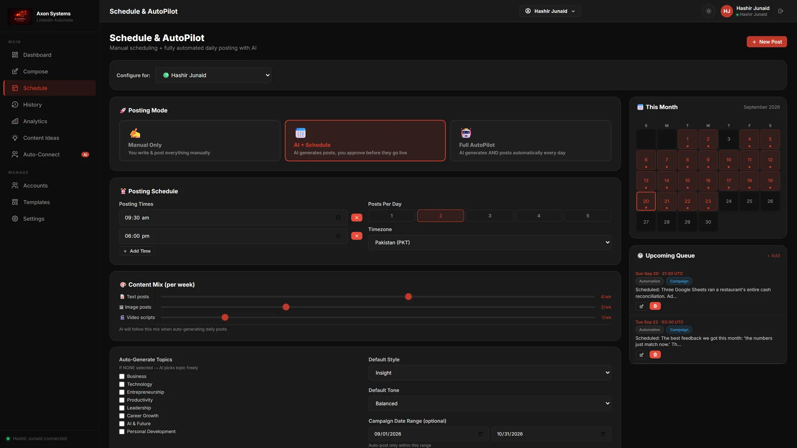
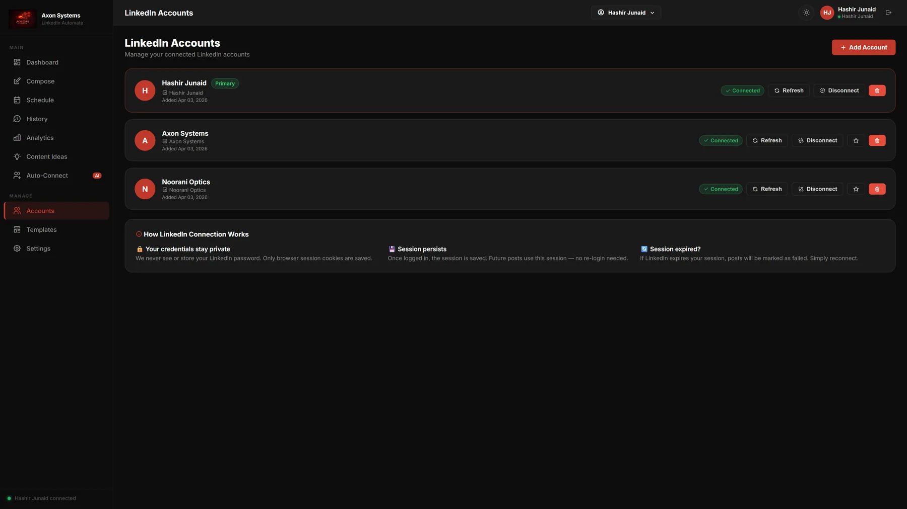
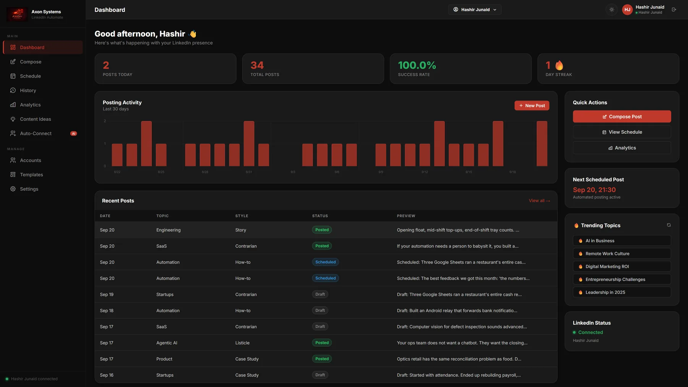
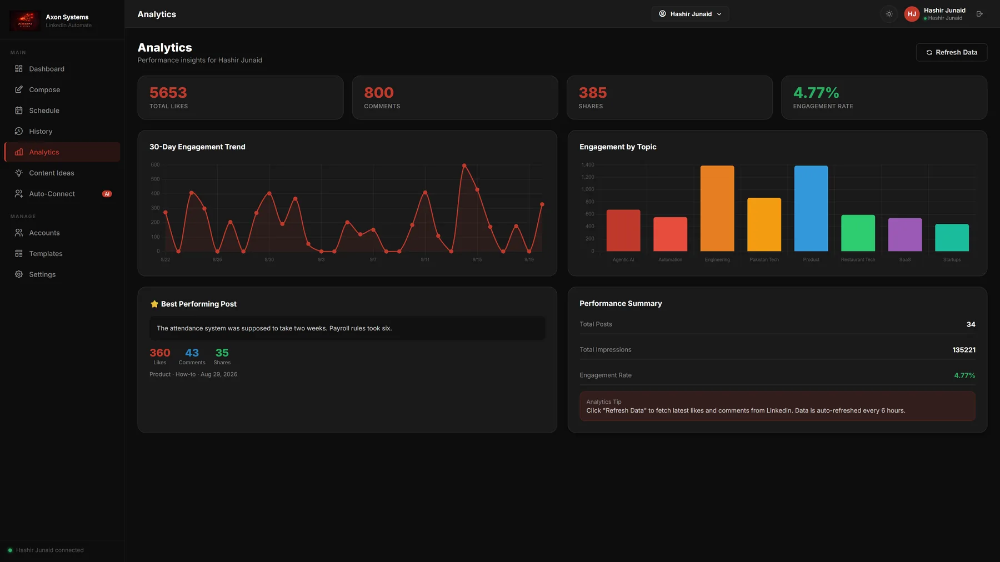
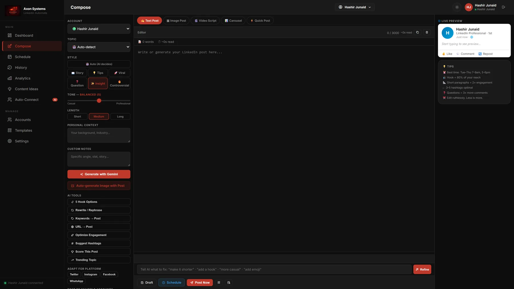
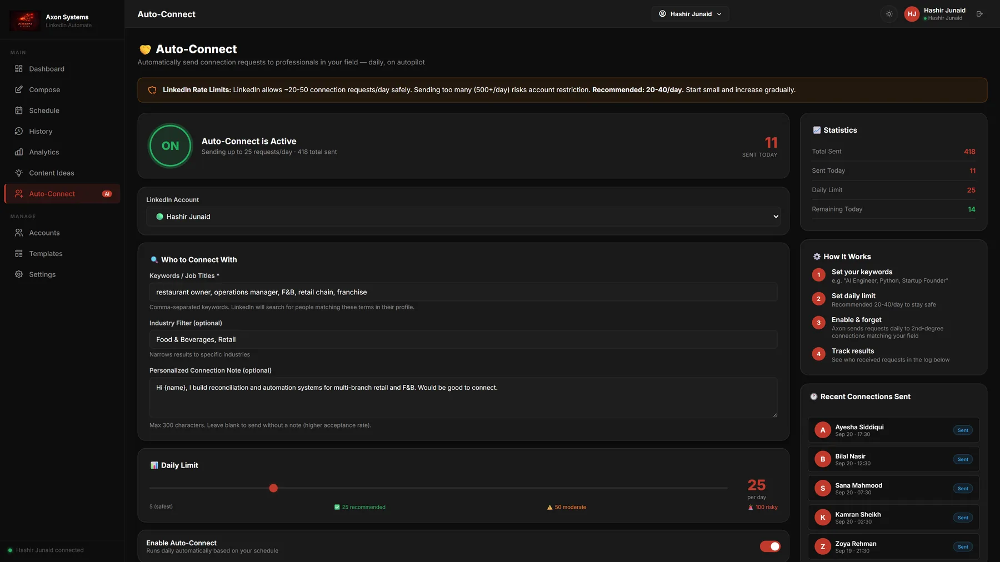
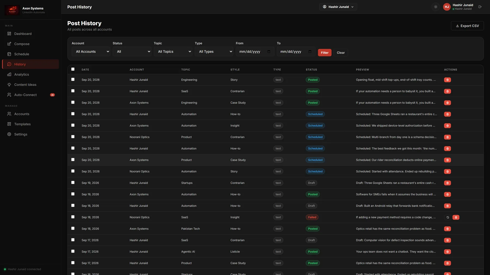

Automation
Axon LinkedIn Automate
A multi-account LinkedIn automation SaaS — generate, schedule, post, and measure.
Posts keep going out on every account on schedule — written, queued and published without anyone sitting in the browser, and the numbers come back in one dashboard.

The problem
Posting consistently across a personal account, a company page and client accounts means either doing it by hand every day or trusting a tool with every password.
What it does
Three posting modes - manual, AI writes and you approve, or full autopilot - over as many accounts as needed, each with its own persisted browser session.
There is no public API for this, so the product drives a real browser. That is why the accounts screen states in the interface that the password is never stored and only the session is kept. Worth saying out loud rather than hiding.
Details
- Three posting modes: manual, AI + approval, or full autopilot
- A persisted browser session per account — the password is never stored
- Analytics, campaigns, templates, auto-connect and competitor watches
More screens





